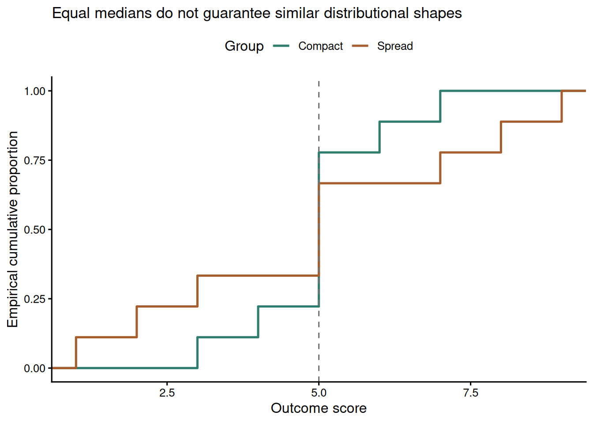
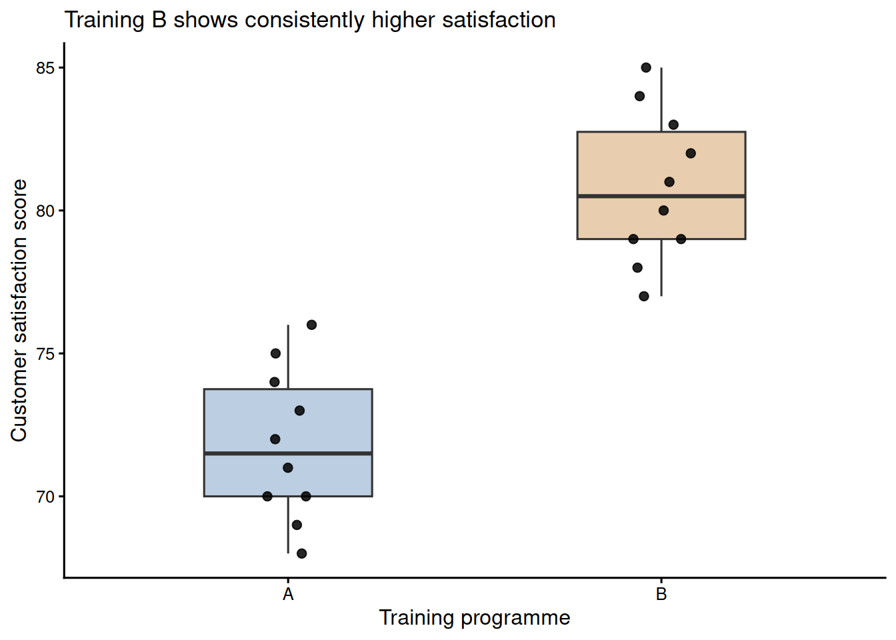

Chapter 11: Nonparametric Rank-Based Methods
Learning Objectives
By the end of this chapter, you will be able to explain why rank-based methods are useful for ordinal, skewed, or outlier-prone outcomes, choose among Mann–Whitney, Wilcoxon signed-rank, Kruskal–Wallis, Friedman, Spearman, and Kendall procedures, interpret rank-based tests as location shifts only when distributional assumptions permit, and report p-values alongside robust effect sizes and uncertainty.
When Rank-Based Methods Help
Rank-based methods replace raw observations with their ranks. That makes them less sensitive to extreme values and less dependent on normality than mean-based methods. The trade-off is that ranks discard some information about magnitude, so a t-test or linear model may be more efficient when assumptions are reasonable and the outcome scale is genuinely interval.
In small-sample work, rank-based tests are most useful for ordinal outcomes, visibly skewed continuous outcomes, and settings where one or two extreme observations would dominate a mean. They are not magic assumption-free substitutes for thinking about the design. Independence, pairing, similar distributional shape, and the substantive meaning of ranks still matter.
Mann–Whitney U Test
The Mann–Whitney U test, also called the Wilcoxon rank-sum test, compares two independent groups by ranking all observations together and evaluating whether one group tends to receive larger ranks. This chapter uses Mann–Whitney U for the two-sample procedure and refers to the Wilcoxon rank-sum statistic only when describing the statistic returned by R. When the two groups have similar distributional shapes, including similar variance and skew, the result can be described as evidence about a median or location shift. If the shapes differ markedly, the safer interpretation is stochastic dominance: a randomly selected observation from one group tends to be larger than a randomly selected observation from the other. Inspect histograms, density plots, or dotplots before choosing the interpretation.
TipInterpreting Mann–Whitney when shapes differ
Use this decision rule before writing the result. First inspect histograms, dotplots, or empirical cumulative distribution functions. If the two groups have broadly similar shape and spread, a location-shift interpretation is reasonable. If the shapes differ, do not describe the result as a simple median comparison. Report stochastic dominance using a probability-of-superiority measure such as Cliff’s delta, together with medians and IQRs for context.
Figure 11.1 shows why this distinction matters. The two groups have the same median, but the spread group has more observations in both tails. A rank test can be sensitive to this broader distributional difference, so the interpretation should be about relative ranks or stochastic dominance rather than a median shift.
Table 11.1
Equal medians with different distributional shapes
| group | Median | IQR | Minimum | Maximum |
|---|---|---|---|---|
| Compact | 5 | 0 | 3 | 7 |
| Spread | 5 | 4 | 1 | 9 |
Note. Both groups have median = 5. The spread group has a wider distribution, so a rank-test result would need a stochastic-dominance interpretation rather than a median-difference interpretation.
In the wait-time example, Branch A has shorter waits than Branch B. Table 11.2 gives the descriptive context, and Table 11.3 gives the inferential summary.
Table 11.2
Wait-time descriptives by branch
| Branch | n | Median | IQR | Minimum | Maximum |
|---|---|---|---|---|---|
| A | 10 | 7.5 | 2.5 | 5 | 12 |
| B | 12 | 13.0 | 2.5 | 10 | 16 |
Note. Wait time is measured in minutes. The distributions should be inspected before interpreting the rank-sum test as a simple median comparison.
Table 11.3
Mann–Whitney test and Cliff's delta for the wait-time example
| Test | W statistic | Hodges–Lehmann shift (A - B) | 95% CI | p-value | Cliff's delta (A vs B) | Delta 95% CI |
|---|---|---|---|---|---|---|
| Mann–Whitney U | 4.5 | -5.0 minutes | -7.0 to -3.0 | < 0.001 | -0.925 | -1.00 to -0.73 |
Note. The negative shift and negative Cliff's delta indicate that Branch A wait times tend to be lower than Branch B wait times. The bootstrap CI reflects effect-size uncertainty in this small sample.
The evidence is strong that the wait-time distributions differ. The estimated location shift is -5.0 minutes for Branch A minus Branch B, so Branch A tends to have shorter waits. Cliff’s delta is -0.925 with a bootstrap 95% CI from -1.00 to -0.73, meaning that a randomly selected Branch A wait is usually lower than a randomly selected Branch B wait but the exact magnitude remains sample-dependent.
Effect Sizes Can Be Unstable in Tiny Samples
Large effect estimates in small samples can arise from real separation, but they can also arise from ordinary sampling variation. Table 11.4 illustrates this with two groups generated from the same normal distribution. The observed Cohen’s d carries meaning only when read alongside the sample size, p-value, confidence interval, and substantive plausibility.
Table 11.4
A large-looking effect from two identical populations
| Quantity | Value |
|---|---|
| Group A mean | 51.9 |
| Group B mean | 49.6 |
| Observed Cohen's d | 0.24 |
| Welch t-test p-value | 0.719 |
Note. Both groups were generated from the same population with mean 50 and standard deviation 10. The example shows why effect sizes from n = 5 per group should be treated as provisional.
Wilcoxon Signed-Rank Test
The Wilcoxon signed-rank test is the paired-sample counterpart to the Mann–Whitney test. It ranks the absolute paired differences and tests whether positive and negative ranks balance around zero. The usual location-shift interpretation assumes that the distribution of paired differences is roughly symmetric. The pseudomedian estimate equals the median paired difference only under that symmetry. With skewed paired differences, report the pseudomedian and confidence interval without calling it the median.
The pseudomedian is the median of all Walsh averages: each paired difference is averaged with itself and with every other paired difference, giving \(n(n + 1)/2\) values. In this example, 12 paired differences produce 78 Walsh averages. That definition explains why the signed-rank estimate can differ from the ordinary sample median when the paired-difference distribution is skewed.
In the intervention example, anxiety scores decline after treatment. Table 11.5 shows the paired summary.
Table 11.5
Wilcoxon signed-rank summary for paired anxiety scores
| Median before | Median after | Median improvement | V statistic | Pseudomedian shift | 95% CI | p-value |
|---|---|---|---|---|---|---|
| 70 | 65 | 5 | 78 | 5.0 | 4.5 to 5.5 | 0.002 |
Note. Differences are coded as before minus after, so positive values indicate improvement.
The signed-rank test gives V = 78 and p = 0.002. The estimated pseudomedian improvement is about 5.0 points, with a confidence interval that excludes zero.
Kruskal–Wallis and Friedman Tests
Kruskal–Wallis extends the rank-sum idea to three or more independent groups. A significant result says that at least one group distribution differs, but it does not identify the pair responsible. Follow-up pairwise comparisons require a multiplicity adjustment.
The workflow is the same each time: rank all observations across groups, compute the omnibus Kruskal–Wallis statistic, estimate an effect size such as epsilon-squared, and then run adjusted pairwise comparisons only if the omnibus result is worth following up. In the ward-satisfaction example, the mean ranks show the direction of the pattern before the test is interpreted.
satisfaction_data %>%
mutate(rank = rank(score, ties.method = "average")) %>%
group_by(ward) %>%
summarise(mean_rank = mean(rank), .groups = "drop")
kruskal.test(score ~ ward, data = satisfaction_data)
rstatix::dunn_test(
satisfaction_data,
score ~ ward,
p.adjust.method = "holm"
)The epsilon-squared estimate is computed as \((H - k + 1)/(n - k)\), where \(H\) is the Kruskal–Wallis statistic, \(k\) is the number of groups, and \(n\) is the total sample size (Tomczak and Tomczak 2014). It is a descriptive measure of how strongly ranks differ across groups, not a replacement for the design context.
Table 11.6
Kruskal–Wallis and adjusted pairwise comparisons
| Result | Statistic | df | p-value | Effect |
|---|---|---|---|---|
| Kruskal–Wallis | 12.25 | 2 | 0.002 | 0.68 |
| Blue vs Green | 0.001 | |||
| Blue vs Red | 0.102 | |||
| Green vs Red | 0.124 |
Note. Pairwise rows report Holm-adjusted Dunn test p-values.
Friedman’s test handles three or more related conditions. For the task-condition example, Table 11.7 reports a large within-person rank effect.
Friedman’s test ranks conditions within each participant rather than ranking all observations together. Kendall’s W rescales the Friedman statistic to an effect-size measure from 0 to 1, where larger values indicate stronger separation among the repeated conditions. If the omnibus test is followed up, paired rank comparisons should again be adjusted for multiplicity.
friedman.test(score ~ condition | participant, data = performance_long)
pairwise.wilcox.test(
performance_long$score,
performance_long$condition,
paired = TRUE,
p.adjust.method = "holm",
exact = FALSE
)Table 11.7
Friedman test summary for repeated task conditions
| Test | Chi-square | df | p-value | Kendall's W |
|---|---|---|---|---|
| Friedman | 12.07 | 2 | 0.002 | 0.75 |
Note. Kendall's W is an effect-size measure for agreement or separation among repeated-measure ranks.
Table 11.8
Adjusted paired comparisons after the Friedman test
| Comparison | Holm-adjusted p |
|---|---|
| condition_2 vs condition_1 | 0.025 |
| condition_3 vs condition_1 | 0.040 |
| condition_3 vs condition_2 | 0.240 |
Note. Pairwise rows report Holm-adjusted paired Wilcoxon p-values. These comparisons are descriptive follow-ups to the omnibus Friedman result.
Rank Correlations
Spearman’s rho and Kendall’s tau measure monotonic association without requiring a linear relationship or normally distributed variables. Spearman’s rho is the Pearson correlation of ranks. Kendall’s tau is based on concordant and discordant pairs, so it is often easier to interpret when tied ranks are common.
When there are no tied ranks, cor.test() can compute exact small-sample p-values for Spearman or Kendall by setting exact = TRUE. When ties are present, R uses approximate p-values. If exact inference is important with ties, use a permutation procedure and report it explicitly.
cor.test(x, y, method = "spearman", exact = TRUE)
cor.test(x, y, method = "kendall", exact = TRUE)Table 11.9
Rank-correlation summaries for experience and satisfaction
| Statistic | Estimate | p-value | Interpretation |
|---|---|---|---|
| Spearman's rho | 0.962 | < 0.001 | Strong monotonic association |
| Kendall's tau | 0.911 | < 0.001 | Strong concordance between ranks |
Note. Both tests use approximate p-values because the data contain ties. If exact small-sample p-values matter, use a permutation procedure or specialised software and report the method.
Lab Practical 11.1: Sales Performance Analysis
A retail company piloted two training programmes across 10 stores each and collected customer satisfaction scores on a 1 to 100 scale. The question is whether Training B produces higher satisfaction than Training A. Figure 11.2 shows nearly complete separation between the programmes, and Table 11.10 reports the descriptive and inferential summaries.

Table 11.10
Sales-training descriptives and rank-sum test
| Measure | Value | Details |
|---|---|---|
| Programme A | n = 10; median = 71.5; IQR = 3.8 | Range 68 to 76 |
| Programme B | n = 10; median = 80.5; IQR = 3.8 | Range 77 to 85 |
| Mann–Whitney U | W = 0; p < 0.001 | Two-sided rank-sum test |
| Hodges–Lehmann shift (A - B) | -9 points | 95% CI: -12 to -6 |
| Cliff's delta (A vs B) | -1.00 | Bootstrap 95% CI: -1.00 to -1.00 |
Note. The negative shift and Cliff's delta occur because the comparison is coded as A minus B. Substantively, Training B is higher. The bootstrap delta interval is degenerate here because all observed Training B scores exceed all observed Training A scores.
The corrected result is stronger than the older draft suggested: W = 0, p < 0.001, and Cliff’s delta is -1.00 with a bootstrap 95% CI from -1.00 to -1.00. Because all Training B scores exceed all Training A scores, this is complete stochastic separation in the sample. The reporting language should still acknowledge the pilot design rather than claiming guaranteed future superiority.
Choosing Among Rank-Based Methods
The methods in this chapter differ by design, not by which one seems most familiar. Start from the study structure: independent groups, paired observations, repeated conditions, or association between two ordered variables. Then report an effect size that matches the design rather than relying on the p-value alone.
Table 11.11
Rank-based method selection guide
| Question | Test | Effect size | R function |
|---|---|---|---|
| Two independent groups | Mann–Whitney U | Cliff's delta or rank-biserial correlation | wilcox.test(); rstatix::wilcox_effsize() |
| Two paired measurements | Wilcoxon signed-rank | Rank-biserial correlation; pseudomedian shift with CI | wilcox.test(paired = TRUE) |
| Three or more independent groups | Kruskal–Wallis | Epsilon-squared plus adjusted pairwise contrasts | kruskal.test(); rstatix::dunn_test() |
| Three or more repeated conditions | Friedman | Kendall's W plus adjusted paired contrasts | friedman.test(); pairwise.wilcox.test(paired = TRUE) |
| Monotonic association | Spearman or Kendall rank correlation | rho or tau with exact or permutation p-value when feasible | cor.test(method = "spearman" or "kendall") |
Note. Use visual checks and design knowledge before choosing the interpretation. A rank test is not automatically a median test when distributional shapes differ.
Reporting Rank-Based Results
A rank-based result should not be reported as a p-value alone. The reader needs to know the design, the outcome scale, the group summaries, the test statistic, the effect size, and the interpretation chosen. For independent groups, that usually means reporting medians and IQRs by group, the Mann–Whitney U result, the p-value, and a probability-style effect size such as Cliff’s delta or rank-biserial correlation. For paired designs, report the median paired change, the signed-rank statistic, the Hodges–Lehmann pseudomedian shift and its interval where available. For more than two groups, state whether follow-up comparisons were adjusted for multiplicity.
Use median-shift language only when the distributions have broadly similar shapes. If one group is more variable or more skewed, write the conclusion as stochastic dominance: observations from one group tended to be higher than observations from the other. This distinction is not cosmetic. It tells readers whether the analysis is about a typical location shift or about the ordering of observations across the full distributions.
A concise report might read: “Satisfaction scores were higher in Training B than Training A. Because the group shapes were similar, the rank-sum result was interpreted as a location shift, W = 0, p < .001, Hodges–Lehmann shift = -8.5 points, Cliff’s delta = -1.00. The negative sign reflects the A-minus-B coding. Substantively, all observed Training B scores exceeded the corresponding Training A range.” If the shapes had differed, the same result should be framed as evidence that Training B scores tended to be higher, not as proof of a median difference.
Key Takeaways
Rank-based tests are useful when outcomes are ordinal, skewed, tied, or vulnerable to outliers, but they still require attention to design and interpretation. Mann–Whitney and Wilcoxon signed-rank tests address independent and paired two-sample questions. Kruskal–Wallis and Friedman extend rank comparisons to multiple independent or repeated groups. Spearman’s rho and Kendall’s tau summarise monotonic association. In small samples, rank-based p-values should be reported with medians, IQRs, robust effect sizes, and enough context to distinguish a defensible pattern from sampling noise. Robust mean-based alternatives are also worth considering when the outcome scale remains meaningfully continuous (Mair and Wilcox 2020).
Self-Assessment Quiz
Test your understanding of nonparametric tests and rank-based methods from Chapter 11.
Question 1. The Mann–Whitney U test is most appropriate when:
Explanation.
Mann–Whitney is the independent two-group rank test. It is especially useful for ordinal outcomes or continuous outcomes where skewness or outliers make mean-based inference fragile.
Question 2. A significant Mann–Whitney test can be interpreted as a median difference only when:
Explanation.
The median-shift interpretation depends on similar distributional shapes, including similar variance and skew. If the shapes differ, stochastic dominance is the safer interpretation.
Question 3. The Wilcoxon signed-rank test is used for:
Explanation.
The signed-rank test is the nonparametric paired-sample procedure. It ranks paired differences and tests whether they are centered around zero.
Question 4. What does the Hodges–Lehmann estimate summarise in a rank-sum comparison?
Explanation.
For a two-sample rank-sum comparison, the Hodges–Lehmann estimate is the median of all pairwise differences and is interpreted as a robust location shift.
Question 5. After a significant Kruskal–Wallis test, the next step is usually to:
Explanation.
The omnibus Kruskal–Wallis test says at least one distribution differs. Pairwise comparisons with multiplicity correction are needed to identify the specific contrasts.
Question 6. Friedman’s test is the rank-based alternative to:
Explanation.
Friedman’s test compares three or more related or repeated-measure conditions using within-participant ranks.
Question 7. Kendall’s tau is often useful when:
Explanation.
Kendall’s tau is based on concordant and discordant pairs, making it useful when tied ranks are common and when that probability interpretation helps readers.
Question 8. A large Cliff’s delta from a tiny sample should be interpreted:
Explanation.
With small samples, large effect estimates can be real or can arise by chance. The effect estimate needs uncertainty, context, and preferably replication.